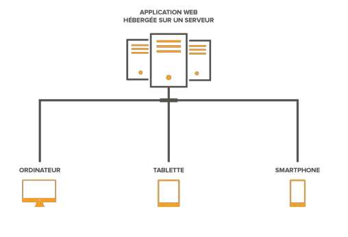
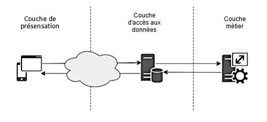
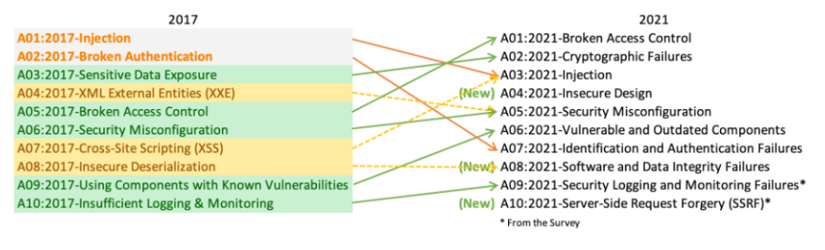

- Introduction -
Depuis quelques années, développer un site web est devenu très
accessible. De plus en plus de gens se lancent dans la réalisation
de leur propre page. Mais très peu sont informés sur les
vulnérabilités présentes dans leur réalisation (plus couramment
appelées failles), et cela peut s'avérer très dangereux. Une faille
est une faiblesse dans un code qui peut être exploitée pour
détourner un site de sa fonction première. Le pirate va pouvoir
récupérer des données confidentielles (comme les infos personnelles
des inscrits) ou modifier le comportement du site. Mais
heureusement, il est possible de se protéger de ces fameuses failles
par diverses techniques.
Outils utilisés
Pearltrees est un
service web de
curation qui permet d'organiser, d'explorer et de partager
des contenus numériques.Cela permet de stocker des éléments
en ligne de façon organisée et afin d'être partagé à
d’autres personnes.
Netvibes.com est
un agréagateur de flux RSS, qui permet de
regrouper le contenu de tout site publiant des informations
dans ces formats. Cela permet de récolter des données sur
des sites pertinants de façon massive.
GoogleAlerte
permet d’avoir des notifications contenant un
lien par mail lorsque dès mots clefs apparaissent dans des
articles.
Zappier
permet de mettre en place des webhooks sur ses sites
partenaires. Cela nous permet notamment de recevoir des
notifications personnalisés lors de certains changement sur
notre smartsheet ou google sheet.
- Qu'est ce qu'une application web ?
-
En informatique, une application web est une
application manipulable
directement en ligne grâce à un navigateur web et qui ne nécessite
donc pas d'installation sur les machines clientes, contrairement aux
applications mobiles. De la même manière que les sites web, une
application web est généralement installée sur un serveur.

Typologie des applications
web
Il existe deux formes de typologies des applications Web :
-
1. Orientée présentation, générant des pages contenant
différents
types de langage : HTML, SGML, XML, ... en réponse à̀ des
requêtes.
Les pages générées peuvent être statiques (pages html) ou
dynamiques (pages contenant du code exécuté sur le serveur).
- 2. Orientée service, implémentant un point
d’accès àun service
via
le Web. Ce service est souvent invoqué par une application
orientée
présentation. Ce sont typiquement des services métiers. On parle
de
transactions B-to-B.
Architecture des applications
web
L’architecture d’une application Web est dite « Architecture à
3-tiers » ou « Architecture à 3 niveaux ». Elle se présente en 3
couches :
- 1. Couche présentation : il s’agit de la
partie de
l'application responsable de la présentation des données, et de
l'interaction avec l'utilisateur (application HTML exploitée par
un navigateur Web ou WML pour être utilisée par un téléphone
portable par exemple).
- 2. Couche métier : elle reçoit les requêtes
utilisateur. Le
serveur d'application fournit les traitements métiers. C'est là
qu'est implémentée la logique du système et ses règles de
gestion. Ce niveau protège les données d'un accès direct par les
clients
-
3. Couche d'accès aux données : couche responsable de la gestion
des données. Cette couche permet de rendre l'accès aux données
transparente (uniforme) quelle que soit la méthode utilisée pour
les stocker (fichier, base de données...).

- Principales failles d'une
application web -
Owasp
OWASP (Open Web Application Security Project)
est un guide de
sécurisation des applications web, c’est un « ouvrage » de référence
des bonnes/mauvaises pratiques de développement, d’une base sérieuse
en termes de statistiques, et d’un ensemble de ressources amenant à
une base de réflexion sur la sécurité.
La Fondation OWASP est entrée en ligne le 1er décembre 2001. Elle a
été créée en tant qu'organisation caritative à but non lucratif aux
Etats-Unis le 21 avril 2004 pour assurer la disponibilité et le
soutien continu de notre travail à l' OWASP. Les Valeurs
fondamentales d’OWASP sont :
- OUVERT - Tout à OWASP est radicalement
transparent de nos
finances
à notre code.
- INNOVATION - OWASP encourage et soutient
l'innovation et les
expériences pour trouver des solutions aux problèmes de sécurité
logicielle.
- GLOBAL - Partout dans le monde les
informaticiens sont
encouragés
à participer à la communauté OWASP.
- INTÉGRITÉ - OWASP est une communauté
mondiale honnête et
véridique, indépendante des fournisseurs.
Le but d’OWASP est de permettre à la communauté mondiale prospérer
en stimulent la visibilité et l'évolution de la sûreté et de la
sécurité des logiciels dans le monde.
Top 10 des failles de
sécurité
L'OWASP Top 10 est un document de sensibilisation puissant pour la
sécurité des applications Web. Il représente un large consensus sur
les risques de sécurité les plus critiques pour les applications
Web. Les membres du projet incluent une variété d'experts en
sécurité du monde entier qui ont partagé leur expertise pour
produire cette liste. L'adoption du Top 10 de l'OWASP est peut-être
la première étape la plus efficace pour changer la culture de
développement de logiciels au sein de votre organisation en une
culture qui produit du code sécurisé.

Broken Access Control N°1 des
failles 2021
Broken Access Control passe de la cinquième position à la première;
94% des applications ont été testées pour Broken Access Control. Les
34 énumérations de faiblesses communes (CWE) mappées au contrôle
d'accès interrompu avaient plus d'occurrences dans les applications
que toute autre catégorie.
- Son principe est simple, se connecter en
falsifiant les données de connection pour avoir accès à des
informations non accessible normalement.
- Le but pour les attaquants est d'agir en tant qu'utilisateurs
ou administrateurs, ou utilisateurs utilisant des fonctions
privilégiées, ou créant, accédant, mettant à jour ou supprimant
chaque enregistrement.
- Solutions -
Voici quelques solutions pour se prémunir des cyber-attaques :
-
Utiliser des mots de passe robustes
-
Toute mise à jour de contenu doit être effectuée exclusivement
depuis un poste
informatique maîtrisé par votre service informatique (DSI) et
dédié à cette activité.
-
Les connexions doivent être réalisées uniquement à partir d’un
réseau maîtrisé et de
confiance. Il est important de ne pas utiliser de réseau Wi-Fi
ouvert ou non maîtrisé afin
d’éviter tout risque d’interception.
Il est important de vérifier que le site visité est légitime et
possède une connexion sécurisée (https).
-
Avoir un système d’exploitation et des logiciels à jour :
navigateur, antivirus.
- Il convient de vérifier régulièrement les éléments publiés et
prévoir une sauvegarde. En cas
de suppression, il est possible de restaurer rapidement l’état
préalable à l’attaque après avoir
pris les mesures de réaction nécessaires.
-
Attention, les courriels et leurs pièces jointes jouent souvent
un rôle central dans les cyberattaques
(courriels frauduleux, pièces jointes piégées, etc.).